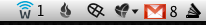

Echowaves Notifier
Echowaves Notifier is a menu bar notification application for Echowaves.com.
The application will check your Echowaves account and notify you when conversations you are following have updates.
Usage
To use Echowaves Notifier, just enter your Echowaves API Key. You can find your personal API Key on your Echowaves.com profile page.
Screenshots

Notes
- Growl support
- User-customizable update check frequency
- Sparkle support for automatic application updating
Requirements
- Mac OS X 10.5
- An Echowaves.com account